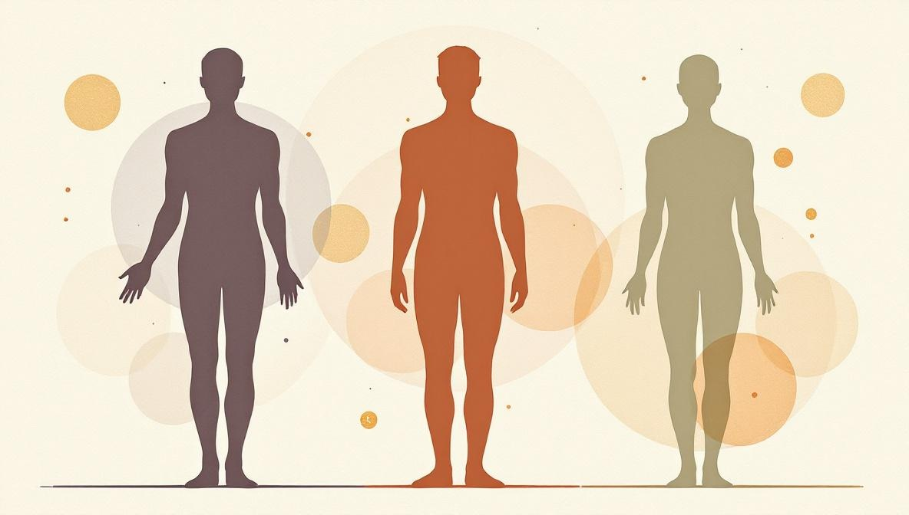
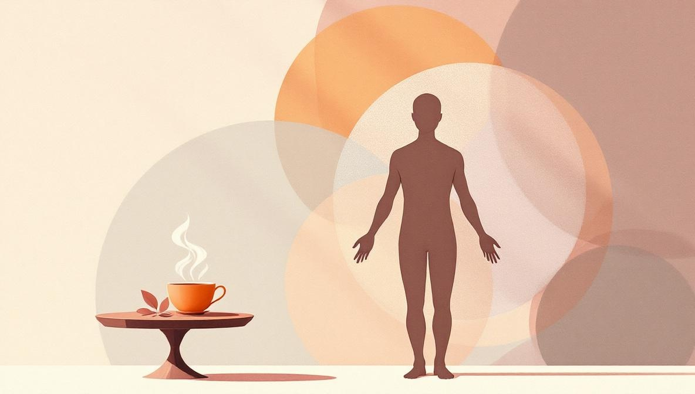

What is Ayurveda?
Ayurveda is a system of traditional medicine that originated on the Indian subcontinent. The name comes from two Sanskrit words: ayur (life) and veda (knowledge). So Ayurveda literally means «the knowledge of life» — and that framing matters, because the system was never just about treating disease. It was a framework for how to live in a way that supports health: what to eat, when to sleep, how to move, how to handle stress.
The earliest written Ayurvedic texts — the Charaka Samhita and the Sushruta Samhita — are estimated to date from roughly 1,000 BCE to 200 CE, but the oral tradition behind them is older still. Today Ayurveda is recognised by the World Health Organization as one of the world's traditional medical systems, and it is officially regulated as a healthcare profession in India through the Ministry of AYUSH. In most Western countries, including Italy, the United Kingdom, and the United States, Ayurveda is not regulated as conventional medicine — it is treated as a complementary or wellness practice.
The simplest way to understand Ayurveda for beginners is this: it is a system that views each person as a unique combination of physical, mental, and energetic qualities, and it works to keep that unique combination in balance through food, routine, herbs, and lifestyle. Health, in Ayurveda, is not the absence of illness — it is the active state of balance between body, mind, and the rhythms of nature.
The five elements and the three doshas
Ayurveda starts from a simple premise borrowed from classical Indian philosophy: everything in the physical world — including the human body — is made of five elements. These are space (akasha), air (vayu), fire (tejas), water (jala), and earth (prithvi). The five elements combine in pairs to form three biological energies, called doshas, that govern all bodily and mental functions:
- Vata (space + air) — governs movement: breath, circulation, nervous impulses, the flow of thoughts.
- Pitta (fire + water) — governs transformation: digestion, metabolism, body temperature, sharpness of mind.
- Kapha (earth + water) — governs structure and lubrication: tissues, bones, joints, immunity, emotional steadiness.
Every person has all three doshas — you cannot lack one. What is unique is the proportion. The proportion you were born with is called your prakriti, your individual constitution, and it does not change throughout your life. The proportion you have right now — which can shift with stress, season, food, and sleep — is called vikriti. The work of Ayurveda is to recognise the gap between prakriti and vikriti and gently bring vikriti back toward your natural baseline.

What does each dosha look like?
A dominant dosha shapes the body, the mind, and even the way someone moves through the world. Here is a simplified summary of the typical traits of each — keeping in mind that most people are a mix of two doshas, and pure single-dosha types are rare.
| Trait | Vata | Pitta | Kapha |
|---|---|---|---|
| Body frame | Slim, light, tall or short | Medium, athletic, well-proportioned | Solid, sturdy, broad shoulders |
| Skin | Dry, cool, thin | Warm, slightly oily, sensitive | Soft, smooth, oily |
| Energy | Bursts of energy, then crashes | Steady, intense, focused | Slow to start, sustained endurance |
| Digestion | Irregular, gas, bloating | Strong, fast, sometimes too acidic | Slow, heavy after meals |
| Mind under stress | Anxious, scattered, restless | Irritable, sharp, critical | Withdrawn, lethargic, attached |
| At balance | Creative, lively, flexible | Decisive, intelligent, courageous | Calm, loyal, grounded |
If you recognise yourself in more than one column, that is normal — most people are a combination of two doshas (vata-pitta, pitta-kapha, vata-kapha). The first dosha is usually the dominant one. Online dosha quizzes give a rough estimate, but a trained Ayurvedic practitioner is much more reliable: they read your pulse at three points on the wrist, examine your tongue, observe your body frame, and ask detailed questions about sleep, digestion, and emotional patterns.
How Ayurveda actually works in practice
Once a practitioner has identified your prakriti and your current vikriti, they recommend changes across four main areas. None of them is a quick fix — Ayurveda works on the timescale of weeks and months, not hours. The four areas are diet, daily routine, herbal supports, and seasonal adjustments.
Diet (ahara)
Ayurvedic diet is not a list of forbidden foods — it is a framework of six tastes (sweet, sour, salty, pungent, bitter, astringent) and six qualities (heavy/light, oily/dry, hot/cold, etc.) that should appear in every meal in the right proportions for your dosha. Vata benefits from warm, oily, grounding foods. Pitta does well with cooling, slightly bitter, less spicy foods. Kapha thrives on light, warm, well-spiced foods. The system also pays close attention to when you eat (the digestive fire is strongest at midday) and how (sitting down, slowly, without distraction).
Daily routine (dinacharya)
Dinacharya is the Ayurvedic concept of a daily routine aligned with the rhythm of nature. The classic recommendations include: rising before sunrise, scraping the tongue, drinking warm water, gentle self-massage with oil (abhyanga), sitting quietly for breath or meditation, eating the largest meal at midday, and going to sleep before 10 pm. Modern research on circadian rhythms supports the broad direction of these recommendations: regular sleep timing, morning light, and consistent meal times do measurably improve sleep quality, metabolism, and mood.

Herbs and supports
Ayurveda uses several hundred herbs, with a few that have crossed over into modern wellness culture: ashwagandha (an adaptogen often used for stress), turmeric (anti-inflammatory), brahmi (cognitive support), triphala (digestive support), tulsi (holy basil). Some Ayurvedic herbs have a growing body of clinical research behind them; others remain traditional uses without robust trials. A real practical caution: traditional Ayurvedic herbal preparations from poorly regulated sources have been found to contain heavy metals (lead, mercury, arsenic) — sometimes deliberately, as part of rasa shastra alchemical preparations, sometimes as contamination. The U.S. National Center for Complementary and Integrative Health and the European Food Safety Authority both recommend buying only from reputable manufacturers with third-party testing.
Seasonal adjustments (ritucharya)
Ayurveda recognises that doshas accumulate differently in different seasons. Vata builds up in autumn and early winter (cold, dry, windy). Pitta accumulates in summer (heat). Kapha builds up in late winter and early spring (cold, wet, heavy). The practical result is that diet and routine should shift with the year — more grounding, oily food in autumn; more cooling, light food in summer; more stimulating, dry food in spring. This seasonal logic is actually one of the easiest entry points for beginners: even small adjustments in line with the season tend to produce noticeable results.
What an Ayurvedic consultation looks like
A first Ayurvedic consultation is usually 60 to 90 minutes — significantly longer than a conventional medical visit. The reason is structural: Ayurveda treats the person as a whole, so the practitioner needs context. They will ask about your medical history, but also your sleep schedule, digestion, energy across the day, emotional patterns, work, relationships, and current life pressures. The interview is followed by a physical assessment that includes:
- Pulse reading (nadi pariksha): the practitioner places three fingers on your wrist, feeling for the qualities of vata, pitta, and kapha at three different positions.
- Tongue examination (jihva pariksha): the colour, coating, texture, and shape of the tongue offer clues about digestive health and accumulated toxins (ama).
- Body frame and skin observation: simple observation of build, skin tone, hair, and eyes that helps confirm the dosha profile.
The consultation ends with a personalised plan: dietary adjustments, a daily routine, perhaps one or two herbal supports, and clear follow-up timing. Most practitioners suggest a follow-up at 4 to 6 weeks. Importantly, Ayurvedic consultations work very well online — pulse reading is the only element that requires physical presence, and many practitioners adapt by relying more on the interview and tongue observation via good video. Online sessions are increasingly common.
What Ayurveda can — and cannot — do
Honest framing matters. Ayurveda has a genuine track record of helping with stress-related conditions, sleep difficulties, mild digestive complaints, low energy, and the general sense of being out of alignment that doesn't fit neatly into any conventional diagnosis. Lifestyle medicine — eating better, sleeping at consistent hours, moving daily, breathing more slowly — produces real measurable results, and Ayurveda is essentially a sophisticated, individualised version of lifestyle medicine.
What Ayurveda cannot do is replace conventional medical care for serious conditions. It cannot treat cancer, manage Type 1 diabetes, address acute infections, or substitute for surgery. Practitioners who claim otherwise are operating outside the ethical limits of the profession. The honest, evidence-aware position is straightforward: see your doctor for diagnoses and acute care; use Ayurveda alongside, not instead of, medical treatment, especially for prevention, lifestyle, and chronic low-grade complaints.
How to start with Ayurveda
If Ayurveda interests you, you do not need to overhaul your life on day one. The most effective starting point is small and consistent. Three concrete things you can try this week:
- Establish a sleep window. Aim to be asleep before 11 pm and awake by 7 am, every day. Ayurveda places enormous weight on sleep timing, and modern circadian research agrees: regular sleep timing improves nearly every other marker of health.
- Eat your largest meal at midday. The Ayurvedic logic is that digestive fire (agni) is strongest when the sun is highest. The practical result, regardless of theory, is that lunch-as-main-meal usually leads to better digestion and lighter, more restful evenings.
- Add warm water with lemon in the morning. A simple, low-stakes Ayurvedic habit. The point is not the lemon — it is the slow, intentional opening of the day, before screens, coffee, or news. This is also where most people first notice that small habit changes can shift how a day feels.
If those three habits stick for two or three weeks, that is the right moment to consider booking a consultation with a trained Ayurvedic practitioner. A real consultation gives you something an article cannot: a personalised reading of your individual constitution, and a plan calibrated to where you actually are.
Want to try an Ayurvedic consultation?
Holistic Unity connects you with verified Ayurvedic practitioners — in-person and online. Each profile shows training, lineage, languages, and price up front. No surprises.
Find an Ayurvedic PractitionerSources and references
- U.S. National Center for Complementary and Integrative Health (NCCIH): «Ayurvedic Medicine: In Depth» — overview, safety considerations, and heavy-metal contamination warnings — nccih.nih.gov/health/ayurvedic-medicine-in-depth.
- World Health Organization — Traditional Medicine: WHO recognises Ayurveda as one of the world's traditional medical systems and supports its evidence-informed integration. See WHO Traditional, Complementary and Integrative Medicine pages at who.int.
- Ministry of AYUSH, Government of India: the official body that regulates Ayurveda, Yoga & Naturopathy, Unani, Siddha and Homoeopathy as healthcare systems in India — ayush.gov.in.
- Heavy-metal contamination of Ayurvedic medicines: Saper RB, Phillips RS, et al., «Lead, mercury, and arsenic in US- and Indian-manufactured Ayurvedic medicines sold via the Internet», JAMA 300(8):915-923, 2008 — PubMed PMID: 18728265.
- Clinical research on ashwagandha for stress: Chandrasekhar K, Kapoor J, Anishetty S, «A prospective, randomized double-blind, placebo-controlled study of safety and efficacy of a high-concentration full-spectrum extract of Ashwagandha root in reducing stress and anxiety in adults», Indian Journal of Psychological Medicine 34(3):255-262, 2012 — PubMed PMID: 23439798.
- Charaka Samhita and Sushruta Samhita: the two foundational classical Ayurvedic texts, dating from approximately 1,000 BCE to 200 CE. Multiple modern English translations exist, including the Sharma edition published by Chowkhamba Sanskrit Series Office (Varanasi).
Frequently asked
What is Ayurveda in simple terms?
Ayurveda is a traditional system of medicine that originated in India around 3,000 years ago. It views health as a balance between three biological energies called doshas — vata (air and space), pitta (fire and water), and kapha (earth and water). Treatment focuses on diet, daily routine, herbs, breathing practices, and lifestyle adjustments tailored to your individual constitution. In most Western countries, Ayurveda is classified as a complementary practice for general wellbeing, not as a substitute for conventional medicine.
What are the three doshas in Ayurveda?
The three doshas are vata, pitta, and kapha. Vata governs movement (breath, circulation, nervous system) and is associated with air and space. Pitta governs transformation (digestion, metabolism, body temperature) and is associated with fire and water. Kapha governs structure and lubrication (tissues, joints, immunity) and is associated with earth and water. Most people have a dominant dosha or a combination of two; the goal of Ayurveda is to keep them in balance through diet, routine, and lifestyle.
How do I know what my dosha is?
Your prakriti — your individual constitution — is determined by physical traits (body frame, skin, hair, digestion), mental traits (energy, focus, emotional patterns), and current symptoms (sleep, appetite, digestion). Online dosha quizzes give a rough estimate, but a trained Ayurvedic practitioner does a more accurate assessment using pulse reading (nadi pariksha), tongue examination, and a detailed intake interview. Your dominant dosha doesn't change, but your current state (vikriti) can shift with stress, season, or diet.
Is Ayurveda safe? Can it replace conventional medicine?
Ayurvedic lifestyle practices — daily routine, mindful eating, breathwork, gentle movement — are generally safe and well-tolerated. However, some traditional Ayurvedic herbal preparations have been found to contain heavy metals (lead, mercury, arsenic) when not produced under modern quality controls. The U.S. National Center for Complementary and Integrative Health (NCCIH) and other regulators recommend buying only from reputable manufacturers. Ayurveda should not replace conventional medical care for serious conditions; it works best as a complementary practice alongside, not in place of, evidence-based medicine.
What does an Ayurvedic consultation involve?
A first Ayurvedic consultation typically takes 60 to 90 minutes. The practitioner asks about your medical history, sleep patterns, digestion, energy levels, emotional state, work, and relationships. They examine your tongue, take your pulse at three points on the wrist (nadi pariksha), and assess your body frame and skin. The result is an individual constitution profile (prakriti) and a current imbalance reading (vikriti), followed by personalised recommendations on diet, daily routine, herbs, and lifestyle. Sessions can be in-person or online — the consultation itself works well over video call.
How long does it take to see results from Ayurveda?
Lifestyle changes — adjusting your diet, sleep schedule, and daily routine — usually show effects within 2 to 4 weeks for things like digestion, energy, and sleep quality. Deeper rebalancing of a dosha imbalance typically takes 3 to 6 months of consistent practice. Ayurveda is not a quick-fix system; its strength is in long-term, sustainable shifts in how you live, eat, and rest.